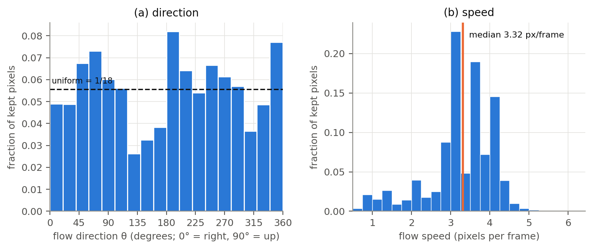

All code is in Question2/ of the repository. Every number below is produced by the scripts listed in the README and read directly from Question2/results/*.json. Unless stated otherwise, results use the 1,000 test videos (indices 9,000–9,999) at 1× with t = 1. Learned models are reported as mean (seed 0, seed 1), and figures use seed 0. Hardware: Apple M3 Pro (11-core CPU, 14-core GPU, 18 GB unified memory), PyTorch 2.10 on the MPS (Metal) backend, Python 3.10.
Data. torchvision.datasets.MovingMNIST(root, split=None, download=True) returns a uint8 tensor of shape (10000, 20, 1, 64, 64). The download was checked against torchvision's MD5. Videos 0–7,999 are used for training, 8,000–8,999 for validation and 9,000–9,999 for testing. Frames are kept as uint8 in memory and converted to float32 / 255 batch by batch, which gives exactly the same values as converting everything up front. Mirror is flip(dims=(-1,)), i.e. (Mx)[i,j] = x[i,63−j]. Rotation is torch.rot90(x, k=a, dims=(-2,-1)). A group element is stored as (m, a) and means MmRa (rotate first, then mirror). Its inverse is itself when m = 1 and R−a otherwise. The window function gathers frames t + k·{0,…,9}, keeps only targets with frame number ≤ 20, and returns a mask that both the loss and every metric use.
Table 1. Checks of the transformation and window functions, using the same functions the experiments call (scripts/table1_checks.py). All rows match.
{{T1}}
Directions. Figure 1(a) contains every direction. Each 20° bin holds between 2.6% and 8.2% of the kept pixels, against 5.6% for a uniform distribution, and no direction is missing or rare. Mirroring every training video would map each direction θ to 180° − θ. Rotating every video by 90° would map θ to θ + 90°. To see how much this would change the histogram, we measured the total-variation (TV) distance between the histogram and its mirrored or rotated version: 0.13 for the mirror and 0.20 for the 90° rotation. The same distance between two disjoint sets of 50 training videos (0–49 versus 50–99) is already 0.09. So the transformed histograms differ from the original by roughly the amount expected from taking a different 50-video sample. On a supplementary set of 1,000 training videos the histogram becomes flatter (every bin between 4.0% and 6.9%), with TV distances of 0.08 (mirror), 0.10 (90° rotation) and 0.04 (180° rotation). The remaining unevenness is mild, consistent with directions being drawn at random, plus some direction-dependent bias in the flow estimator. Therefore mirrored and rotated trajectories are already familiar as motion: every direction they contain occurs often in training. What is not familiar after a mirror or rotation is the appearance of the digits (Q2.2).
Speeds. A typical digit moves about 3.3 px/frame (median 3.32; interquartile range 3.0–3.9; 95th percentile 4.3; 99th percentile 4.7). Playing at 2× doubles the displacement between the frames the model sees, to about 6.6 px/frame (≈ 8.6 at the 95th percentile). Playing at 3× gives about 10 px/frame (≈ 13 at the 95th percentile). Almost no training pixel moves faster than 5 px/frame, so both speed-ups are unfamiliar motion.
Overlaps. Where digits overlap, one image patch contains two motions, so Farneback returns a blend or nonsense there. That adds noise to both histograms and pulls some speeds towards zero. It cannot change the answer, though. We recomputed the statistics after removing every frame pair in which the digits overlap at all (351 of 950 pairs, detected from the drop in the number of lit pixels). The median speed changes from 3.32 to 3.29 px/frame, the share of pixels slower than 2 px/frame from 9.0% to 8.7%, and the direction bins still span 2.7–8.3%.
| Transformation | Motion statistics | Digit appearance |
|---|---|---|
| Mirror M | Essentially unchanged: directions are reflected (θ → 180° − θ) onto directions that are equally common (Q2.1); speeds are unchanged. | Changed: mirrored digits (a reversed 2, 3, 7…) never occur in training. |
| Rotation R | Essentially unchanged: θ → θ + 90°, again onto common directions; speeds are unchanged. | Changed more: rotated digits are even further from upright MNIST. |
| Speed-up k× | Changed: displacement per frame is multiplied by k, outside the training range. | Unchanged: the same upright digits. |
This makes the three transformations a controlled experiment. Each one changes mostly one factor and leaves the other fixed, and the motion rule itself (constant velocity with elastic bounces in a square box) is valid under all three. A model that has truly learned motion should cope with all of them. If it fails only under M and R, the cause is appearance (its motion rule is tied to what upright digits look like). If it fails only under speed-up, the cause is the motion itself, which is either unfamiliar or beyond the network's reach. Comparing M with R also varies the size of the appearance change while the motion statistics stay the same.